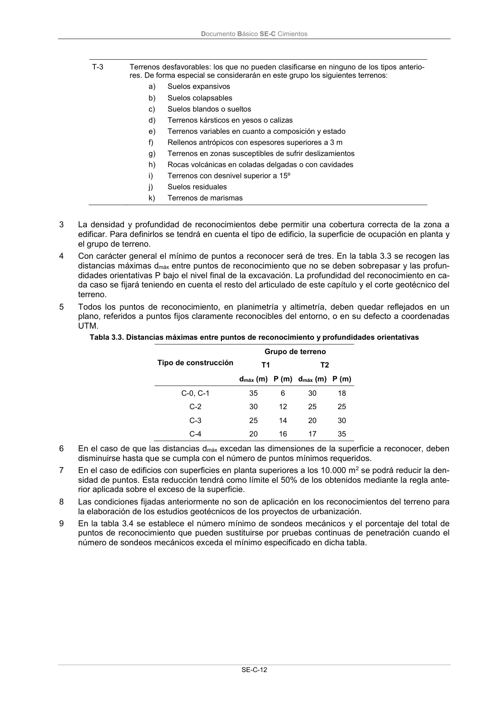

DB-SE-C · Página 17 · versión 2019-12-20
SHA256: a71133f4b0dca253e45ea3071c70f2a512354bcc5cd841bf89b1a502f567ac5e · página física 17 de 165 · métodos de encabezado
solo si están cotejados.
Formatos: Markdown · JSON de bloques · PDF p. 17 · imagen PNG
Documento Básico SE-C Cimientos SE-C-12 T-3 Terrenos desfavorables: los que no pueden clasificarse en ninguno de los tipos anterio- res. De forma especial se considerarán en este grupo los siguientes terrenos: a) Suelos expansivos b) Suelos colapsables c) Suelos blandos o sueltos d) Terrenos kársticos en yesos o calizas e) Terrenos variables en cuanto a composición y estado f) Rellenos antrópicos con espesores superiores a 3 m g) Terrenos en zonas susceptibles de sufrir deslizamientos h) Rocas volcánicas en coladas delgadas o con cavidades i) Terrenos con desnivel superior a 15º j) Suelos residuales k) Terrenos de marismas 3 La densidad y profundidad de reconocimientos debe permitir una cobertura correcta de la zona a edificar. Para definirlos se tendrá en cuenta el tipo de edificio, la superficie de ocupación en planta y el grupo de terreno. 4 Con carácter general el mínimo de puntos a reconocer será de tres. En la tabla 3.3 se recogen las distancias máximas dmáx entre puntos de reconocimiento que no se deben sobrepasar y las profun- didades orientativas P bajo el nivel final de la excavación. La profundidad del reconocimiento en ca- da caso se fijará teniendo en cuenta el resto del articulado de este capítulo y el corte geotécnico del terreno. 5 Todos los puntos de reconocimiento, en planimetría y altimetría, deben quedar reflejados en un plano, referidos a puntos fijos claramente reconocibles del entorno, o en su defecto a coordenadas UTM. Tabla 3.3. Distancias máximas entre puntos de reconocimiento y profundidades orientativas Tipo de construcción Grupo de terreno T1 T2 dmáx (m) P (m) dmáx (m) P (m) C-0, C-1 35 6 30 18 C-2 30 12 25 25 C-3 25 14 20 30 C-4 20 16 17 35 6 En el caso de que las distancias dmáx excedan las dimensiones de la superficie a reconocer, deben disminuirse hasta que se cumpla con el número de puntos mínimos requeridos. 7 En el caso de edificios con superficies en planta superiores a los 10.000 m2 se podrá reducir la den- sidad de puntos. Esta reducción tendrá como límite el 50% de los obtenidos mediante la regla ante- rior aplicada sobre el exceso de la superficie. 8 Las condiciones fijadas anteriormente no son de aplicación en los reconocimientos del terreno para la elaboración de los estudios geotécnicos de los proyectos de urbanización. 9 En la tabla 3.4 se establece el número mínimo de sondeos mecánicos y el porcentaje del total de puntos de reconocimiento que pueden sustituirse por pruebas continuas de penetración cuando el número de sondeos mecánicos exceda el mínimo especificado en dicha tabla.
